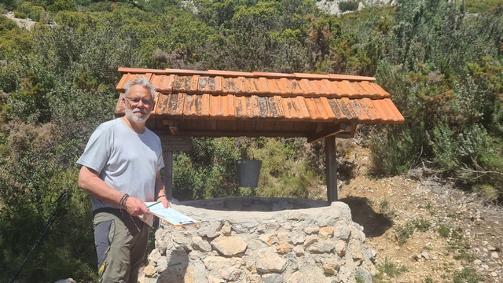

Mon domaine de recherche
En tant que sourcier professionnel, j'interviens pour tout besoin lié à la détection de veines d’eau souterraine, aux problèmes d’infiltration et à la localisation de sources avant forage. Mes prestations s'adressent aussi bien aux particuliers qu'aux agriculteurs ou exploitants agricoles.
- Arrosage
- Piscine
- Maison (toilettes, lave-vaisselle, lave-linge)
- Infiltrations d'eau et fuites
- Aquathermie verticale (pompe à chaleur eau-eau)
- Élevage
- Maraîchage
- Les étangs
- Maison isolée sans eau...